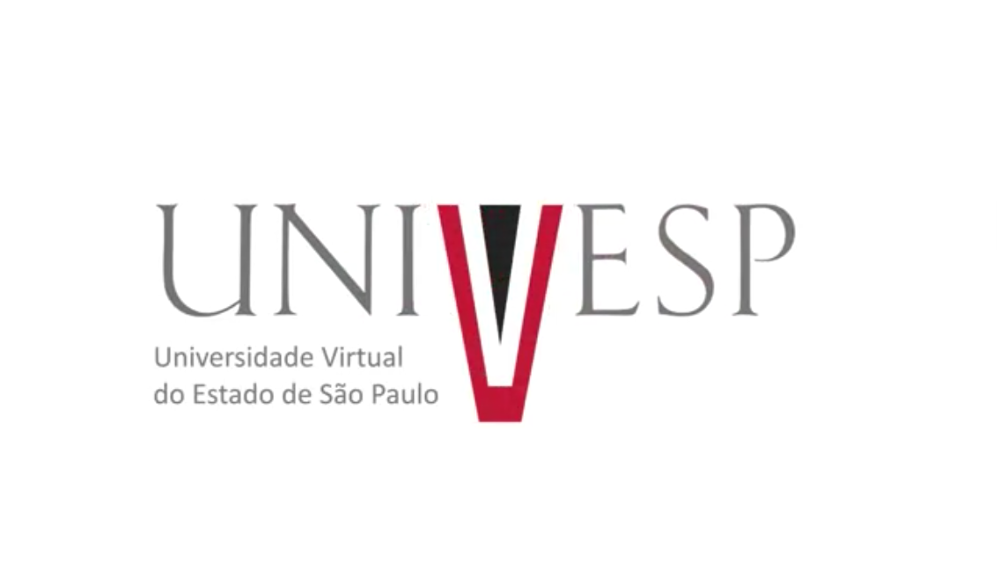

Este site foi elaborado para atendimento a disciplina Projeto Integrador dos cursos do Eixo Computação da Univesp.
Aunos:
Carlos Phelipe Tavares de Araújo
Flávio Francisco Martins Borges
Leonardo Parra Vigo
Monique Mendes
Rosani Alice Messias Lopes
Orientadora: Viviane Tavares Nascimento
Grupo: Mairinque 002
